2
ആയിരവും കടന്ന്
ആയിരവും കടന്ന് മത്സരം നടക്കുകയാണ്.
ഒന്നാമത്തേത് ടോോട്ടോോക്കാറാണ്. അതിന്റെ നമ്പർ കണ്ടോോ. 700
800
900
1000
19

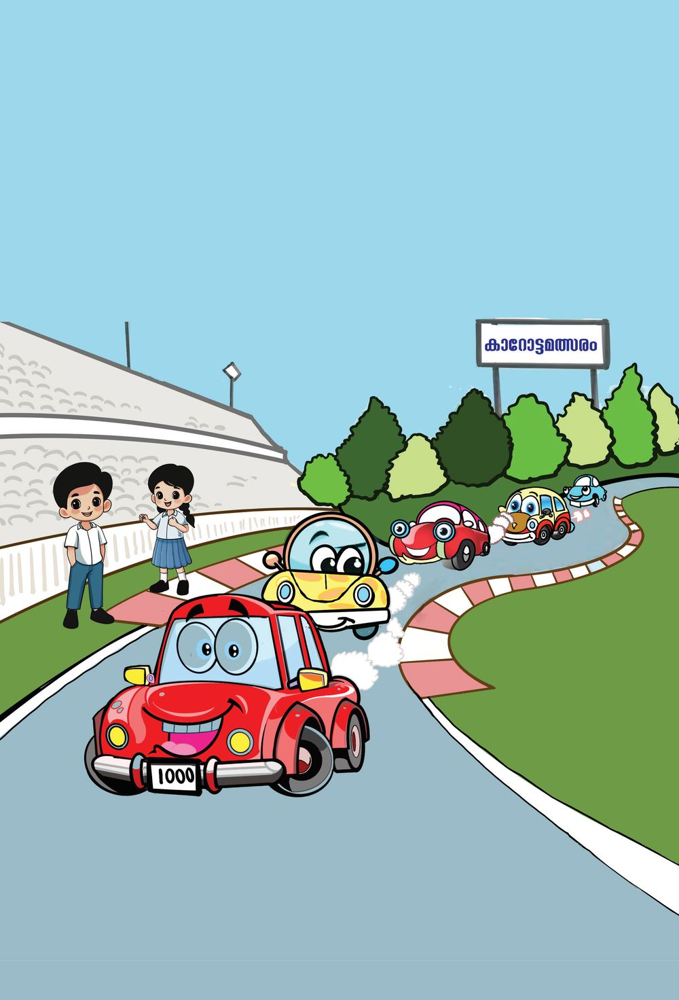
2
ആയിരവും കടന്ന്
ആയിരവും കടന്ന് മത്സരം നടക്കുകയാണ്.
ഒന്നാമത്തേത് ടോോട്ടോോക്കാറാണ്. അതിന്റെ നമ്പർ കണ്ടോോ. 700
800
900
1000
19
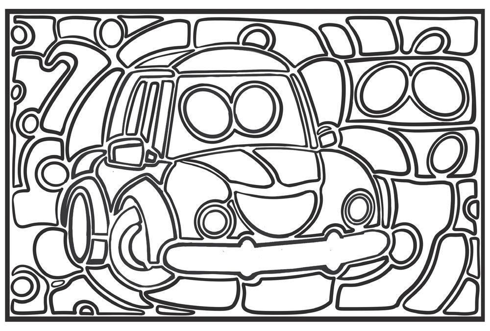
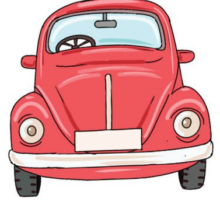

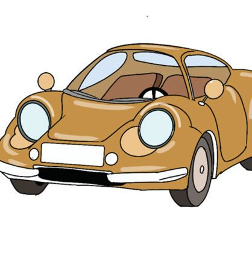

ഗണിതം സ്റ്റാൻഡേർഡ് - IV
സംഖ്യാബന്ധം കണ്ടുപിടിക്കൂ... ബന്ധം കണ്ടുപിടിച്ച് ഒഴിഞ്ഞ കളങ്ങളിലെ സംഖ്യയകൾ എഴുതൂ. 9
100
........
199
........
500
........
909
........
999
10
101
110
........
280
........
667
........
990
........
ടോോട്ടോോ കാറിന് നിറം കൊാടുക്കൂ... നിങ്ങൾ എഴുതിയ സംഖ്യയകൾ ചുവടെയുള്ള ചിത്രത്തിൽ നിന്ന് കണ്ടുപിടിക്കൂ. ആ കളങ്ങൾക്ക് നിറം കൊൊടുക്കൂ. 99
5
666
666
499
908
200
109
200
910
501
279 200
6
66
666
601
198
102
910
111
279
989 1000 992
281
991
നമ്പർ പ്ലേറ്റ് ടോോട്ടോോ കാറിന്റെ കൂട്ടുകാരാണിവർ. സൂചനകളിൽ നിന്നും നമ്പർ കണക്കാക്കി നമ്പർ പ്ലേറ്റിൽ എഴുതിച്ചേർക്കൂ. 8 നൂറ് 4 പത്ത് 2 ഒന്ന്
20
910 ൽ നിന്നും
ഒന്നുകുറവ്
ഏറ്റവും വലിയ മൂന്നക്ക സംഖ്യയ
ഏറ്റവും വലിയ രണ്ടക്ക സംഖ്യയോോട് ഒന്നുകൂട്ടിയത്

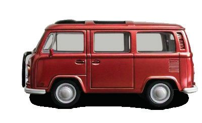


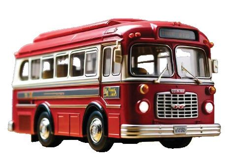
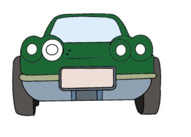

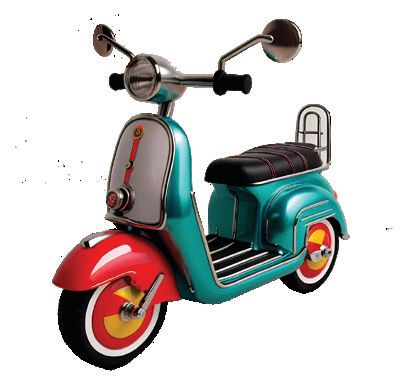
ആയിരവും കടന്ന്
അമ്പമ്പോോ... ആയിരം എന്റെ നമ്പർ ഏറ്റവും ചെറിയ നാലക്ക സംഖ്യയയാണ്.
എന്റെ നമ്പർ വായിക്കൂ
വരച്ചുചേർക്കൂ
മനക്കണക്കായി ചെയ്യൂ.
ഏതൊൊക്കെ വാഹനങ്ങളുടെ നമ്പറുകൾ കൂട്ടിയാൽ ടോോട്ടോോ കാറിന്റെ നമ്പർ കിട്ടുംം? വരച്ചുചേർക്കൂ... 505
250
999
100
750
1
990
495
900
10
21


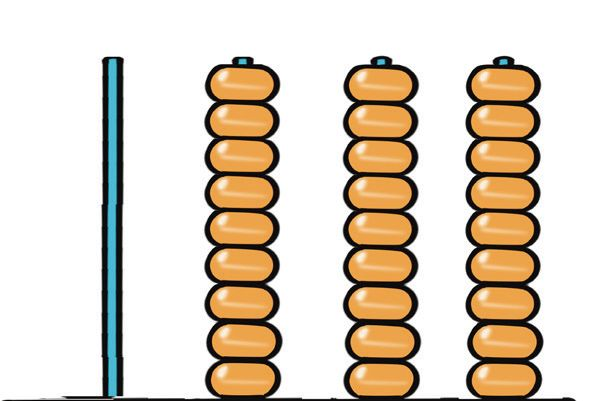

ഗണിതം സ്റ്റാൻഡേർഡ് - IV
ഒന്നു കൂടി ചേർത്താൽ
അബാക്കസിലെ സംഖ്യയയെന്താണ് ? ഒന്ന് കൂടി കൂട്ടിയാലോോ ? ഈ സംഖ്യയ അബാക്കസിൽ വരയ്ക്കൂ...
ആയിരം നൂറ്
പത്ത്
ഒന്ന്
പസിൽ കോർണർ
ഞാനാര് ? അബാക്കസിൽ ഒരു മുത്ത്. ഏറ്റവും വലിയ മൂന്നക്ക സംഖ്യയയെക്കാൾ വലിയവൻ. ഞാനാര് ? അബാക്കസിൽ എന്റെ സ്ഥാനം ഏതാണ് ?
ആയിരം
നൂറ്
പത്ത്
ഒന്ന്
പെട്രോോൾ പമ്പ് കാറോോട്ട മത്സരത്തിൽ പങ്കെടുക്കുന്ന കാറുകൾ ഓരോാന്നും 1000 രൂപയ്ക്ക് പെട്രോോൾ നിറച്ചു.
1000
ടോോട്ടോോ കാർ 100 രൂപയുടെ നോോട്ടു കളാണ് കൊൊടുത്തത്. എത്ര നോോട്ടുകൾ?
22
ടോോമോാ കാർ 10 രൂപയുടെ ഒരു കെട്ട് നോോട്ടാണ് കൊൊടുത്തത്. എത്ര നോോട്ടുകൾ?
ബഗ്ഗി കാർ ഒരു രൂപ നാണയങ്ങളാണ് കൊൊടുത്തത്. എത്ര നാണയങ്ങൾ?


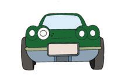


ആയിരവും കടന്ന്
കാറോോട്ടമത്സരം റേസ് സർക്കീട്ടിൽ കാറുകളുടെ മത്സരയോോട്ടം നടക്കുകയാണ്. ഒരു റൗണ്ട് കഴിഞ്ഞാൽ 1000 പോോയിന്റ് കിട്ടുംം. ഓരോാ കാറുംം ഓടിത്തീർത്ത റൗണ്ടുകൾ നൽകിയിരിക്കുന്നു. പോോയിൻ്റ് കണക്കാക്കുക. കാറിന്റെ പേര്
1000
റൗണ്ട്
മിക്കി
1
സ്കൈബി
5
ബഗ്ഗി
3
ആൽഫ
6
ടോോമോാ
7
ഫ്ലോാറ
4
ഫ്രഡി
8
സ്പീഡി
9
ടോോട്ടോോ
10
ബോോണി
2
പോോയിന്റ്
4000
കിട്ടിയ പോോയിന്റിന്റെ അടിസ്ഥാനത്തിൽ കാറുകളെ ക്രമപ്പെടുത്തി നോോട്ടുബുക്കിൽ എഴുതൂ. എങ്ങനെയൊാക്കെ ക്രമപ്പെടുത്താം? 23


ഗണിതം സ്റ്റാൻഡേർഡ് - IV
.........
പടികയറാം .........
പടികളിലെ സംഖ്യയകളെല്ലാം എഴുതുക.
......... .........
6000 ......... ......... .........
2000
1000
1000 1000
1000
1000
1000
1000
മിക്കി ബോോണി ബഗ്ഗി
ഫ്ളോോറ സ്കൈബി ആൽഫ ടോോമോോ ഫ്രഡി
സ്കൈബി കാറിന് ലഭിച്ച പോോയിന്റുകൾ അബാക്കസിൽ വരയ്ക്കൂ.
ആയിരം നൂറ്
പത്ത്
ഒന്ന്
അഞ്ച് ആയിരം ചേർന്നാൽ അഞ്ചായിരം (അയ്യായിരം) എന്നുപറയും. 24
സ്പീഡി ടോോട്ടോോ
സ്പീഡി കാറിന് ലഭിച്ച പോോയിന്റുകൾ അബാക്കസിൽ വരയ്ക്കൂ.
ആയിരം നൂറ്
പത്ത്
ഒന്ന്
ഒൻപത് ആയിരം ചേർന്നാൽ ഒൻപതിനായിരം.


ആയിരവും കടന്ന്
ഇരുപത് ആയിരം ചേരുമ്പോോഴോോ?
പത്ത് ആയിരം ചേരുമ്പോോൾ പത്തായിരം. പതിനായിരം എന്നും പറയും.
മറ്റ് തുകകൾ എഴുതുക പത്ത് (10)
നൂറ് (100)
5+5
50 + 50
ആയിരം (1000) പതിനായിരം (10000) 500 + 500
5000 + 5000
6+4 7+3 80 + 20
സ്പീഡോോമീറ്റർ കാറോോട്ടമത്സരം തുടങ്ങുന്നതിനുമുമ്പ് ടോോട്ടോോ 1000 കിലോോമീറ്ററാണ് ഓടിയത്. മത്സരത്തിലെ ഒരു ലാപ് ഒരു കിലോോമീറ്ററാണ്.
പട്ടിക പൂർത്തിയാക്കൂ ലാപ്
സ്പീഡോോമീറ്ററിൽ
1
1000 + 1 = 1001
2
1000 + 2 = 1002
.................
............................
15 ലാപ് ഓടിയാലോാ?
.................
............................
.................
............................
.................
............................
25 ലാപ് ഓടിയാലോാ?
.................
............................
11 ലാപ് ഓടിയാൽ സ്പീഡോോ മീറ്ററിൽ എത്രയാകും ?
25


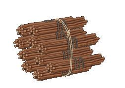
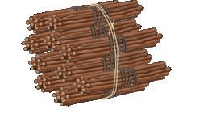
ഗണിതം സ്റ്റാൻഡേർഡ് - IV
എഴുതാം... വരയ്ക്കാം... വായിക്കാം... 1000 ഉം
ആയിരം ഒന്ന്
ആയിരം രണ്ട്
1 ഉം
10 0 0 1 10 0 1
ആയിരത്തിയൊൊന്ന് 1001
1000 ഉം
ആയിരത്തിരണ്ട്
2 ഉം
1002
ആ നൂ പ ഒ
ആ നൂ പ ഒ
ആയിരം നാല്
ആ നൂ പ ഒ
ആയിരം ആറ്
ആ നൂ പ ഒ
ആയിരം അഞ്ച്
ആ നൂ പ ഒ
ആയിരം ഒൻപത്
ആ നൂ പ ഒ
ആയിരം ഏഴ്
ആ നൂ പ ഒ
ആയിരം എട്ട്
ആ നൂ പ ഒ
ആയിരം പത്ത്
ആ നൂ പ ഒ
ആ - ആയിരം, നൂ - നൂറ്, പ - പത്ത്, ഒ - ഒന്ന്
26

ആയിരവും കടന്ന്
ആയിരത്തതോട് ചേരുമ്പപോൾ 1000 + 100
1000 + 10
1 0 00
100
1 0 00
10
1 1 00 1 0 10
ആയിരത്തി ഒരുനൂറ് ആയിരത്തിപ്പത്ത്
2000 + 200
3000 + 40
3000 + 5
1000 + 300 + 30
ആയിരത്തി മുന്നൂറ്റി മുപ്പത്
5000 + 30 + 3
8000 + 300 + 3
6000 + 700 + 40 + 8
1000 മുതൽ 1200 വരെ എത്ര സംഖ്യയകളുണ്ട് ?
27

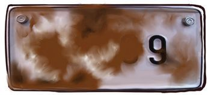


ഗണിതം സ്റ്റാൻഡേർഡ് - IV
അക്കത്തിലും അക്ഷരത്തിലും എഴുതൂ... അക്കത്തിൽ
അക്ഷരത്തിൽ
5250
എഴായിരത്തി എഴുന്നൂറ്റിയേഴ് 9018
ഒൻപതിനായിരത്തി ഒൻപത്
സംഖ്യയാകാർഡുകൾ സംഖ്യാകാർഡുകൾ നോോക്കൂ. അവ ഉപയോോഗിച്ച് ഉണ്ടാക്കാവുന്ന നാലക്ക സംഖ്യയകൾ എഴുതൂ...
3
5
8
1
5-ൽ തുടങ്ങുന്ന എത്ര സംഖ്യയകളുണ്ട് ?
പത്തിന്റെ സ്ഥാനത്ത് 8 വരുന്ന എത്ര സംഖ്യയകളുണ്ട് ? സംഖ്യയകളെ ചെറുതിൽ നിന്നും വലുതിലേക്ക് എന്ന ക്രമത്തിൽ നോോട്ടു ബുക്കിൽ എഴുതുക.
സംഖ്യയ വായിക്കാമോോ ? മത്സരത്തിൽ പങ്കെടുക്കാനുള്ള സ്പീഡി കാറിന്റെ രജിസ്റ്റർ നമ്പർ ചെളിപുരണ്ട് മറഞ്ഞിരിക്കുന്നു. ഇപ്പോോൾ കാണുന്ന നമ്പർ കുറച്ചുസ്ഥലം വൃത്തിയാക്കിയപ്പോോൾ കുറച്ചുകൂടി വൃത്തിയാക്കിയപ്പോോൾ മിക്കഭാഗവും വൃത്തിയാക്കിയപ്പോോൾ 28
എന്തൊാരു ചന്തം ! 9 +1 =
10
99 + 1 = ................ 999 + 1 = ................ 9999 + 1 = ................


ആയിരവും കടന്ന്
മഡ് റേസ്
കൂട്ടുകാരുമായി മഡ് റേസ് കളിക്കൂ... 100, 200, ..., 600 വരെ എഴുതിയ ഡൈസ് ഉപയോോഗിച്ച് കളിക്കുക. ഡൈസ് വീഴുമ്പോോൾ മുകളിൽ കാണുന്ന സംഖ്യയക്കനുസരിച്ച് കാറ് നീക്കൂ. പാലം വന്നാൽ പാലത്തിൽ കയറി മുന്നോാട്ടുംം കുഴിയിൽ വീണാൽ പിറകോാട്ടുംം എത്തും. ആദ്യംം 11000 ത്തിൽ എത്തുന്ന ആൾ വിജയിക്കും.
ട്ട് ാർ
സ്റ്റാ
400 100 00 2
ഈ പാഠത്തിലെ ആദ്യയപേജിലെ ചിത്രത്തിൽ അവസാനത്തെ രണ്ട് ബോാർഡുകളിലെ ദൂരങ്ങൾ എഴുതൂ.
29

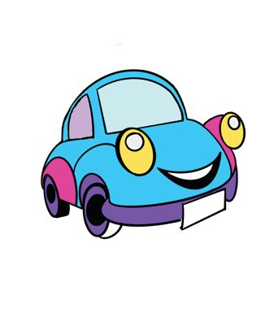
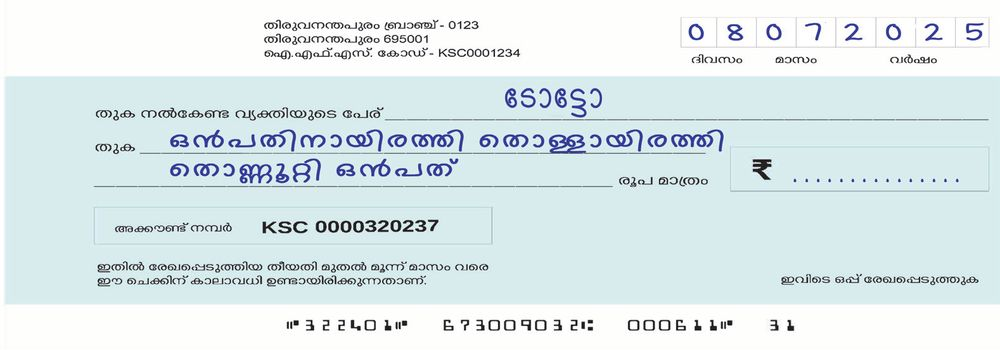

ഗണിതം സ്റ്റാൻഡേർഡ് - IV
സമ്മാനം കാറോോട്ടമത്സരത്തിൽ വിജയിയായ ടോോട്ടോോയ്ക്ക് ട്രോോഫിക്കൊൊപ്പം ക്യാഷ് പ്രൈസും ഉണ്ട്. സമ്മാനം ചെക്കായിട്ടാണ് കൊാടുത്തത്. ചെക്കിൽ തുക അക്കത്തിൽ എഴുതൂ.
സഞ്ചരിച്ച ദൂരം ഓരോോ കാറുംം ആകെ സഞ്ചരിച്ച ദൂരം ചുവടെ തന്നിരിക്കുന്നു. നമ്പർ
കാർ
1
മിക്കി ബോോണി സ്പീഡി
2 3
ദൂരം
നമ്പർ
കാർ
7982
4 5
6375
6
ഫ്രഡി ഫ്ലോാറ ടോോട്ടോോ
(കിലോോമീറ്റർ)
8546
ദൂരം
(കിലോോമീറ്റർ)
5114 6735 8564
ഓടിയ ദൂരത്തിനനുസരിച്ച് പട്ടികപ്പെടുത്തൂ. കൂടുതൽ ദൂരം ഓടിയത് ആദ്യയവും കുറച്ചുദൂരം ഓടിയത് അവസാനവും എഴുതണേ. നമ്പർ
30
കാറിന്റെ പേര്
ദൂരം (കിലോോമീറ്റർ) അക്കത്തിൽ
അക്ഷരത്തിൽ


ആയിരവും കടന്ന്
ബഗ്ഗി കാറിന്റെ നമ്പർ അബാക്കസിലെ ആയിരത്തിന്റെ സ്ഥാനത്തുനിന്ന് ഒരു മുത്തെടുത്ത് 1 ന്റെ സ്ഥാനത്തിടുക. ഇപ്പോോൾ കിട്ടിയ സംഖ്യയ എന്താണ് ? ആയിരം കുറഞ്ഞു 1 കൂടി
അബാക്കസിലെ ആദ്യയ സംഖ്യയയും ഇപ്പോോൾ ലഭിച്ച സംഖ്യയയും തമ്മിലുള്ള വ്യയത്യാസമാണ് ബഗ്ഗി കാറിന്റെ നമ്പർ. നമ്പർ എന്താണ് ? ആയിരം
ഒന്നും കൂടി ചേർന്നാൽ
നൂറ്
പത്ത്
ഒന്ന്
അബാക്കസിലെ സംഖ്യയ എന്താണ് ?
പതിനായിരം ആയിരം നൂറ്
പത്ത്
ഒന്ന്
ഇതിനോോട് ഒന്നുകൂടി കൂട്ടിയാൽ കിട്ടുന്ന സംഖ്യയ എന്താണ് ?
ടോോമോോ കാർ വർക്ക്ഷോോപ്പിൽ കാറോോട്ട മത്സരത്തിനുശേഷം കേടുപാടു
കൾ മാറ്റുന്നതിനായി ടോാമോാ കാറിനെ വർക്ക്ഷോോപ്പിലേക്ക് മാറ്റി. ബാറ്ററി മാറ്റാൻ 3500 രൂപയും എഞ്ചിൻ പണിക്ക് 2500 രൂപയും പെയിന്റിങിന് 4000 രൂപയും ആയി. ആകെ എത്ര രൂപ ചെലവായി ?
ചോോദ്യംം വായിച്ച് ഞാൻ മനസ്സിലാക്കിയ കാര്യയങ്ങൾ
ആകെ ചെലവായ തുക 31

ഗണിതം സ്റ്റാൻഡേർഡ് - IV
യാത്ര പോാകാം ടോോട്ടോാ കാർ ഒരു അഖിലേന്ത്യയ യാത്രയ്ക്കുള്ള ഒരുക്കത്തിലാണ്. അതിനായി 4 ടയറുകളുംം മാറ്റണം. ഒരു ടയറിന് 2500 രൂപ. ആകെ എത്ര രൂപ വേണം ?
അഖിലേന്ത്യയ യാത്രയ്ക്കിടെ ബോാണി ഇലക്ട്രിക്കാർ ചാർജ് ചെയ്തപ്പോാൾ കൊാടുത്ത തുകയാണ് താഴെ തന്നിട്ടുള്ളത്. കാർ ചാർജ് ചെയ്യാൻ ചെലവായ തുക കണക്കാക്കുക. 1
2
3
3500 രൂപ
2000 രൂപ
3000 രൂപ
ഞാൻ കണക്കാക്കിയ രീതി
ക്രമം തുടരൂ... 1.
500, 1000, 1500, .........., .........., .........., .........., .........., ..........
2.
4000, 6000, 8000, .........., .........., .........., .........., .........., ..........
3.
7628, 7728, 7828, .........., .........., .........., .........., .........., ..........
4.
2222, 3333, 4444, .........., .........., .........., .........., .........., ..........
5.
9400, 9300, 9200, .........., .........., .........., .........., .........., ..........
6.
3021, 4132, 5243, .........., .........., .........., .........., .........., ..........
32


ആയിരവും കടന്ന്
എന്റെ പാറ്റേൺ
............,
............,
............
............
............
............,
............,
............
............
............
............,
............,
............
............
............
............,
............,
............
............
............
1. കാർ റേസിൽ പങ്കെടുക്കുന്ന കാറുകൾക്ക് സംഘാടകസമിതി രജിസ്റ്റർ നമ്പറുകൾ കൊാടുത്തിരിക്കുന്നു. 5000 മുതൽ 5050 വരെയുള്ള നമ്പറാണ് കൊാടുത്തത്. മത്സരത്തിൽ എത്ര കാറുകൾ പങ്കെടുത്തു? 2. 5, 4, 0, 7 എന്നീ അക്കങ്ങൾ എല്ലാം ഉപയോോഗിച്ച് നാലക്കസംഖ്യയകൾ
എഴുതുക. എത്ര സംഖ്യയകൾ എഴുതാൻ കഴിഞ്ഞു? ഏറ്റവും വലിയ നാലക്കസംഖ്യയ അബാക്കസിൽ വരയ്ക്കുക. ഈ സംഖ്യയ അക്ഷരത്തിൽ എഴുതുക.
3. 9999 നും 10100 നും ഇടയിലുള്ളതും ഒന്നിന്റെ സ്ഥാനത്ത് പൂജ്യംം വരു
ന്നതുമായ എല്ലാ സംഖ്യയകളുംം എഴുതുക.
4. പാറ്റേൺ പൂർത്തിയാക്കുക. (A)
10150, 10200, 10250, .........., .........., .........., .........., ..........
(B)
1500, 2600, 3700, .........., .........., .........., .........., ..........
(C)
14500, 15250, 16000, .........., .........., .........., .........., ..........
5. ഞാനാര് ?
• • • •
4000 ത്തിനും 5000 ത്തിനും ഇടയിലുള്ള സംഖ്യയയാണ്.
ആയിരത്തിന്റെ സ്ഥാനത്തെ അക്കത്തിന്റെ ഇരട്ടിയാണ് ഒന്നി ന്റെ സ്ഥാനത്തെ അക്കം. ആയിരത്തിന്റെ സ്ഥാനത്തെ അക്കത്തിന്റെ പകുതിയാണ് പത്തിന്റെ സ്ഥാനത്തെ അക്കം. അക്കങ്ങളുടെ തുക 19 ആണ്. സംഖ്യയ എന്താണ് ? 33


ഗണിതം സ്റ്റാൻഡേർഡ് - IV
6.
സംഖ്യയ കണ്ടുപിടിക്കുക •
9999 എന്ന സംഖ്യയയിൽ നിന്നും 1000 വീതം കുറഞ്ഞുവന്നാൽ 8-ാമത് വരുന്ന സംഖ്യയ എന്താണ് ?
•
100 വീതമാണ് എന്താണ് ?
കുറയുന്നതെങ്കിൽ 5-ാമത് വരുന്ന സംഖ്യയ
ഇതുപോാലൊാരു ചോാദ്യംം തയ്യാറാക്കി കൂട്ടുകാരുമായി പങ്കുവയ്ക്കൂ. 7.
1000 ത്തിനും 1100 നും ഇടയിൽ പൂജ്യയത്തിൽ അവസാനിക്കുന്ന
8.
1 മുതൽ 50 വരെ എഴുതുമ്പോോൾ 2 എത്ര തവണ എഴുതണം?
എത്ര സംഖ്യയകൾ ഉണ്ട് ?
•
100 വരെ ആയാലോോ ?
•
2 ന് പകരം 3 ആയാൽ ഒരേ എണ്ണം തന്നെയാണോോ?
അന്വേേഷണം 1, 2 എന്നീ
അക്കങ്ങൾ ഉപയോാഗിച്ച് (അക്കങ്ങൾ ആവർത്തി ക്കാതെ) എഴുതാവുന്ന എല്ലാ രണ്ടക്കസംഖ്യയകളുംം എഴുതുക. സംഖ്യയ കളുടെ എണ്ണം എഴുതുക.
1, 2, 3 എന്നീ
അക്കങ്ങൾ ഉപയോാഗിച്ച് (അക്കങ്ങൾ ആവർത്തി ക്കാതെ) എഴുതാവുന്ന എല്ലാ മൂന്നക്കസംഖ്യയകളുംം എഴുതുക. സംഖ്യയകളുടെ എണ്ണം എഴുതുക.
1, 2, 3, 4 എന്നീ അക്കങ്ങൾ ഉപയോാഗിച്ച് (അക്കങ്ങൾ ആവർത്തി
ക്കാതെ) എഴുതാവുന്ന എല്ലാ നാലക്കസംഖ്യയകളുംം എഴുതുക. സംഖ്യയകളുടെ എണ്ണം എഴുതുക.
കണ്ടുപിടിച്ച കാര്യയങ്ങൾ നോാട്ടുബുക്കിൽ എഴുതൂ...
34